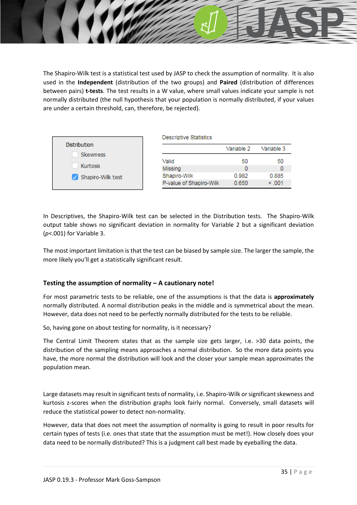
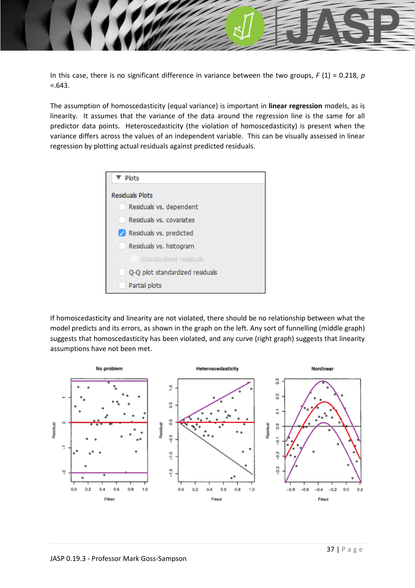

JASP_data_transformation
JASP 資料轉換：計算欄、log 轉換
JASP_lecture ←→ JASP_normality_test JASP_skewness_kurtosis
對應統計概念
normality test · skewness · kurtosis
用途
JASP 內建變數轉換器，常見應用：
- 計算差異欄：例如 pre-post 差異（重複量數的衍生變數）
- log / sqrt 轉換：將偏態分配導向常態分配，以滿足母數檢定的常態性假設
- 重新編碼
操作步驟
- 在最後一欄看到
+圖示，點擊 - 輸入新欄位名稱
- 選 R code 或 Manual（拖拉式）
- 選擇資料型態（continuous / ordinal / nominal）
- Click Create → 進入算式編輯器

範例 1：計算差異欄
要建立 var2 - var3：
- 從左側拖入 var2 到算式區
- 從右側拖入
-運算子 - 拖入 var3
- 點 Compute column
錯誤拖錯時：拖到右下垃圾桶圖示移除。
範例 2：log10 轉換
log10(y)
把 y 用想轉換的變數替換 → Compute column → 關閉編輯視窗。
視覺驗證轉換效果
下圖顯示原始（左）與 log10 轉換後（右）的分配：偏態消失、近似常態。

注意
- Export 會把衍生欄一起輸出
- 不要的衍生欄可用 R icon 旁邊的垃圾桶移除
- log 轉換要求所有值 > 0；若有 0 或負值需先平移（如
log10(y+1)）
延伸
- 為何要轉換？→ JASP_normality_test
- 偏態 / 峰度判讀：JASP_skewness_kurtosis
- 概念詳解：social_science_statistics_book §1.4 / §4